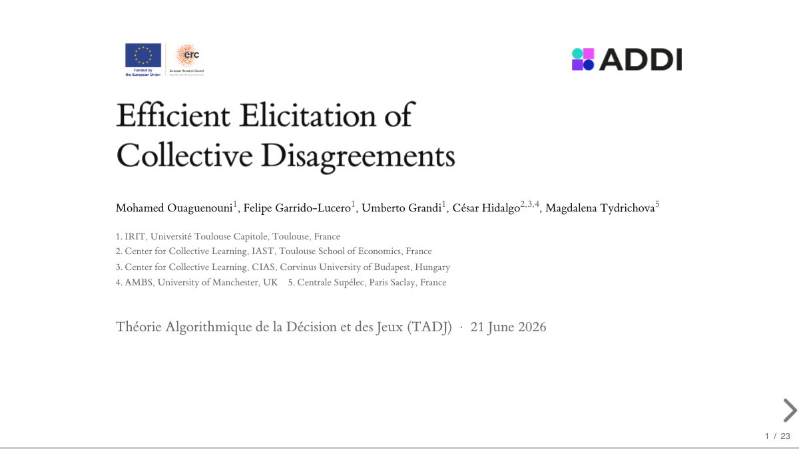

Efficient Elicitation of Collective Disagreements
Preprint · arXiv, 2026
A measure — and a low-cognitive-load protocol — for eliciting where a population genuinely splits, not merely whether it agrees.
Postdoctoral researcher · IRIT, Université Toulouse Capitole
I work at the intersection of machine learning, decision theory, and computational social choice. I build models that learn and represent human preferences — including when those preferences interact, or cycle — and I study how to elicit, and make sense of, the structure of collective (dis)agreement.
I am currently a postdoc on the ADDI project (Advancing Digital Democratic Innovation) at IRIT, Toulouse. I hold a PhD from Sorbonne University (LIP6) on learning and predicting preferences over sets under element interactions and preference cycles.
A glimpse of what I'm working on →
How to learn faithful, interpretable models of preference from sparse comparisons. I develop θ-additive models that capture synergies and antagonisms between elements, robust-ordinal-regression methods that return the simplest models consistent with the data, an extension of the Skew-Symmetric Bilinear model for non-transitive (cyclic) preferences, and hybrid schemes that pair Gaussian processes with robust inference.
How a population disagrees, not just what it decides. Within the ADDI project I work on measuring and efficiently eliciting collective disagreement, on the information content of voting measures, and on algorithms and platforms that support deliberative, participatory democracy.
Author names in published order; mine in bold. Full list on DBLP.
Preprint · arXiv, 2026
A measure — and a low-cognitive-load protocol — for eliciting where a population genuinely splits, not merely whether it agrees.
European Journal of Operational Research, 320(1):146–159, 2025
Learning minimal interaction-aware models of set preferences by robust ordinal regression, with the complexity landscape of model selection.
ECAI 2024 — 27th European Conference on Artificial Intelligence
A Skew-Symmetric Bilinear model that represents any weighted tournament over sets, and how to optimize with it — tested on competitive-game data.
ECAI 2023 — 26th European Conference on Artificial Intelligence
Pairing a Gaussian process over candidate models with robust inference on the MAP model — flexibility with logical-consistency guarantees.
AAMAS 2023 — extended abstract
Pooling sparse, partially-conflicting opinions into shared interaction-aware models — collaborative preference learning under uncertainty.
PhD thesis · Sorbonne University (LIP6), 2025
The full account: interaction-aware and intransitive models of set preferences, learned robustly and predicted from sparse data.
A build-in-the-browser talk: a measure of where a population disagrees (not just whether it does), a hierarchy that grades how much information a disagreement measure really uses, and a low-cognitive-load protocol to elicit it. Built with reveal.js, with live Plotly figures you can drive directly from the slides.

Expository articles on machine learning and operations research, published on Towards Data Science.
Popular-science videos I contributed to, on the channel Les Revues du Monde.
≈ 435 h (equiv. TD) taught in 2021–2025, as doctoral instructor then ATER, at the UFR d'Ingénierie, Sorbonne Université — tutorials (TD), labs (TP) and supervised projects, from L1 to L3. Details in my CV.
Asymptotic comparison of algorithms; linear, tree and graph structures; graph traversal; hash tables; blockchain as a secure structure. C labs (Makefiles) and supervised projects: a blockchain, a CPU simulator, and a version-control system.
Advanced complexity and the master theorem; enumeration, greedy, divide-and-conquer and dynamic-programming algorithms; graph traversal; characteristic functions.
HTML/CSS/JavaScript and the DOM; building a React front-end; a Node.js / Express back-end; a NoSQL (MongoDB) database.
Java and the object paradigm: classes, levels of abstraction, functional interfaces, inheritance, and defensive programming.
Descriptive statistics and exploratory data analysis; supervised, generative, discriminative and unsupervised learning; non-linear methods, clustering and density estimation.
Python from the basics to more advanced ideas: conditionals, the interpreter, comprehensions, and the procedural paradigm.
Python on embedded systems: the Raspberry Pi, reading sensors through a programmatic interface, a small web interface, and a relational database.
Supervised two groups: a genetic algorithm turning portraits into paintings, and an evaluation of character balance in a massively-multiplayer online game.
Supervised a group building an incremental preference-elicitation method, applied to perfumes.